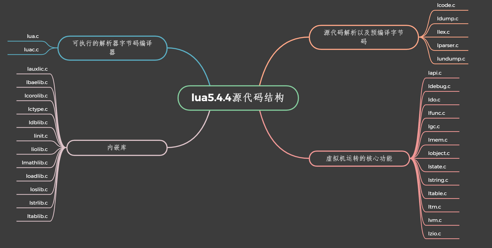

lua简介
-
lua 很小
将lua添加到应用程序不会让代码膨胀,也不会有很多的第三方库,繁琐的配置,很容易就能键入到你的应用程序当中
Lua 5.4.4的压缩包含源代码和文档，压缩值为353K，未压缩值为1.3M。源代码包含大约30000行c语言。在64位Linux下，用所有标准Lua库构建的Lua解释器占用281K,Lua库占用468K -
lua是可移植性
lua以一个小包的形式发布,可以在所有具有标准c编译器的平台上开箱即用 -
lua速度很快
lua在经过不断的版本迭代现在lua5.4.4上应用分代GC和增量GCGC这块已经不是什么卡壳点,还有TBC局部变量,元表提供的GC元方法,等等一些新特性能够让你更好的优化自己项目的性能 -
lua已经经过很多应用和游戏的验证
比如魔兽世界,愤怒的小鸟,巴西数字电视的
ginga中间件,还有skynet的actor方式的微服务框架 -
lua 嵌入
lua可以很方便的和c,c++语言进行嵌入,还用于Javac#SmalltalkFortranAdaErlang，甚至其他脚本语言(如Perl和Ruby)编写的程序
下载
本人已经在GitHub上对lua作者的源码进行大部分注解,后面还会逐步继续完善
lua 源码结构

虚拟机运转的核心功能
| 文件 | 作用 |
|---|---|
| lapi.c | Lua API。实现大量的Lua C API（lua_ *函数） |
| ldebug.c | 调试接口 |
| ldo.c | 函数调用以及栈管理 |
| lfunc.c | 函数原型及闭包管理 |
| lgc.c | 垃圾回收 |
| lmem.c | 内存管理接口[luaM_realloc / luaM_growaux_] |
| lobject.c | 对象操作的一些函数。包括数据类型<->字符串转换 |
| lstate.c | 状态机 管理全局信息,和状态机相关的逻辑 |
| lstring.c | 字符串池 |
| ltable.c | 表类型的相关操作。Lua表（哈希） |
| ltm.c | 标记方法。实现从对象访问元方法。 |
| lvm.c | 虚拟机。执行字节码（luaV_execute）。还公开了lapi.c使用的一些功能（例如luaV_concat） |
| lzio.c | 通用的缓冲输入流接口 |
内嵌库
| 文件 | 作用 |
|---|---|
| lauxlib.c | c库编写用到的辅助函数库 |
| lbaselib.c | lua基础库 |
| lcorolib.c | 协程库 |
| lctype.c | 标准库中ctype相关实现 |
| ldblib.c | Debug库 |
| linit.c | 内嵌库的初始化 |
| liolib.c | IO库 |
| lmathlib.c | 数学库 |
| loadlib.c | 动态扩展库管理 |
| loslib.c | OS库 |
| lstrlib.c | 字符串库 |
| ltablib.c | 表处理库 |
源代码解析以及预编译字节码
| 文件 | 作用 |
|---|---|
| lcode.c | Lua的代码生成器。由lparser.c使用 |
| ldump.c | 序列化预编译的Lua字节码 |
| llex.c | 词法分析器。由lparser.c使用 |
| lparser.c | 解析器 |
| lundump.c | 还原预编译的字节码 |
可执行的解析器，字节码编译器
| 文件 | 作用 |
|---|---|
| lua.c | Lua独立解释器 |
| luac.c | Lua编译器（将字节码保存到文件中；还列出字节码） |